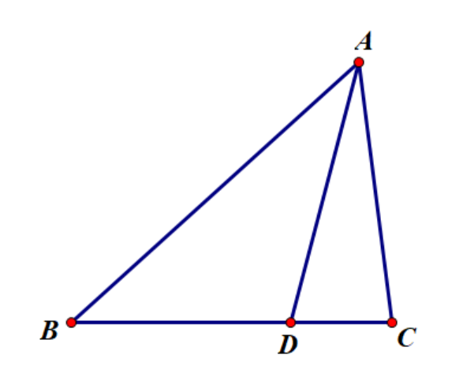

正弦定理系
共边比例定理¶
共边比例定理
 
如图，\(\triangle ABC\) 及 \(BC\) 边上一点 \(D\)，有： $$ \dfrac{BD}{DC}=\dfrac{S_{\triangle ABD}}{S_{\triangle ADC}}. $$证明见奠基性的正弦定理部分。
分角定理¶
分角定理
如图，\(\triangle ABC\) 及 \(BC\) 边上一点 \(D\)，有： $$ \dfrac{BD}{DC}=\dfrac{AB\sin\angle BAD}{AC\sin\angle DAC}. $$
证明见奠基性的正弦定理部分。
分角定理给出了共线线段比例的一般处理方法，以及"分角"（\(\angle BAC\) 及其一条分角线 \(AD\) 组成的图形）的一种处理方法。由于构型简单，可被广泛使用。
塞瓦定理及其角元形式¶
塞瓦定理
\(D,E,F\) 分别在直线 \(AB,BC,CA\) 上，则：
\(AD,BE,CF\) 三线共点或两两平行 \(\iff\) \(\dfrac{A D}{D B} \cdot \dfrac{B E}{E C} \cdot \dfrac{C F}{F A}=1.\)
定理之证明
必要性：
若三线共点，令共点为 \(P\)，则 \(\dfrac{B D}{D C} \cdot \dfrac{C E}{E A} \cdot \dfrac{A F}{F B}=\dfrac{[ABP]}{[APC]}\cdot\dfrac{[BCP]}{[BPA]}\cdot\dfrac{[CAP]}{[CPB]}=1.\)
若两两平行，用平行线分线段成比例易得.
充分性：用同一法+必要性的证明即可.
将边的分比用分角定理改为分角，则可得到角元塞瓦定理：
角元塞瓦定理
\(D,E,F\) 分别在直线 \(AB,BC,CA\) 上，则
\(A D,B E,C F\) 三线共点或两两平行 \(\iff\) \(\dfrac{\sin \angle B A D}{\sin \angle D A C} \cdot \dfrac{\sin \angle C B E}{\sin \angle E B A} \cdot \dfrac{\sin \angle A C F}{\sin \angle F C B}=1\).
定理之证明
定理的证明也很简单，应用塞瓦定理+分角定理，将边的分比转换为角的分比+\(\triangle ABC\)三条边的轮换对称比例得证.
角元塞瓦定理的优越性在于，它不关心 \(D,E,F\) 的位置，以及三条线的共点有什么性质，只关心三个分角的比例。在处理“三线共点或两两平行”这件事上有蒙日定理和角元塞瓦定理两大定理抓手，各司其职：
- 蒙日定理关键在于使共点的直线成为根轴，所以在多圆的情况下会成为首选，但是根轴往往不易被发现，需要发掘甚至构造圆与根轴。
- 角元塞瓦定理则限制更少，只要图中的线性条件更多，角元塞瓦定理会成为一个很不错的抓手点。
下面是一个例子：
角元塞瓦定理的抛瓦
 

如图，两圆 \(\Gamma_1,\Gamma_2\) 交于 \(A,B\) 两点，点 \(C,D\) 分别在 \(\Gamma_1,\Gamma_2\) 上且线段 \(CD\) 与 \(\Gamma_1\) 的第二个交点为 \(E\)，直线 \(BC\) 与 \(\Gamma_2\) 的第二个交点为 \(F\)，直线 \(DF\) 与 \(EB\) 交于点 \(G\)，直线 \(CG\) 与 \(AB\) 交于点 \(P\)，求证：若 \(E\) 为 \(CD\) 的中点，则直线 \(PF\) 与 \(CA\) 的交点 \(Q\) 在圆 \(\Gamma_2\) 上。
(2019-3-希望联盟夏令营-P14)
问题之证明
我们设点 \(Q\) 在圆 \(\Gamma_2\) 上，反过来证明：\(CG,AB,FQ\) 三线共点。
对 \(\triangle BFG\) 与三条线使用角元塞瓦定理，即
$$ \iff\dfrac{\sin\angle DFQ}{\sin\angle QFB}\cdot\dfrac{\sin\angle ABC}{\sin\angle EBA}\cdot\dfrac{\sin\angle BGC}{\sin\angle CGF}=1. $$
由于 \(G\) 为 \(BE\) 和 \(DF\) 的交点，故处理 \(\dfrac{\sin\angle BGC}{\sin\angle CGF}\) 时需将点 \(G\) 消掉.
使用分角定理与梅涅劳斯：
$$ \dfrac{\sin\angle BGC}{\sin\angle CGF}=\dfrac{BC}{CF}\cdot\dfrac{FG}{BG}=\dfrac{BC}{CF}\cdot\dfrac{DF}{BE}\cdot\dfrac{CE}{DC}. $$
由正弦定理 $$ \dfrac{CE}{BE}=\dfrac{\sin\angle EBC}{\sin\angle BCE}, \dfrac{DF}{DC}=\dfrac{\sin\angle FCD}{\sin\angle DFC}, \dfrac{BC}{CF}=\dfrac{CE}{CD}\cdot\dfrac{\sin\angle CAB\cdot\sin\angle DFC}{\sin\angle EBC\cdot\sin\angle CDF} $$
故\(\dfrac{\sin\angle BGC}{\sin\angle CGF}=\dfrac{CE}{CD}\cdot\dfrac{\sin\angle CAB}{\sin\angle CDF}\)，即证：
$$ \dfrac{\sin\angle DFQ}{\sin\angle QFB}\cdot\dfrac{\sin\angle ABC}{\sin\angle EBA}\cdot\dfrac{\sin\angle CAB}{\sin\angle CDF}\cdot\dfrac{CE}{CD}=1. $$
经过探索，我们采用基本量表示的方法：
设\(\angle BCD=\alpha\)，\(\angle DFQ=\beta\)，则导角后即证：
$$ \dfrac{\sin\beta}{\sin A}\cdot\dfrac{\sin B}{\sin(C-\alpha)}\cdot\dfrac{\sin A}{\sin(A+\alpha+\beta)}\cdot\dfrac{CE}{CD}=1. $$
\(\iff\dfrac{2CE}{CD}\sin B\sin\beta=2\sin(A+\alpha+\beta)\sin(C-\alpha)\\
=\cos(A-C+2\alpha+\beta)-\cos(A+C+\beta)\\
=\cos(A-C+2\alpha+\beta)+\cos B\cos\beta+\sin B \sin\beta\)
由条件，对 \(\triangle ADC\) 用正弦定理：
$$ \dfrac{CD}{\sin\beta}=\dfrac{AC}{\sin(\beta+\alpha-C)}=\dfrac{CE\sin B}{\sin(A+\alpha)\sin(\beta+\alpha-C)}. $$
即\(-\dfrac{2CE}{CD}\sin B\sin\beta=2\sin(A+\alpha)\sin(C-\beta-\alpha)\\
=\cos(A-C+2\alpha+\beta)-\cos(A+C-\beta)\\
=\cos(A-C+2\alpha+\beta)+\cos B\cos\beta-\sin B \sin\beta\)
故结论成立 \(\iff 2CE=CD\). 得证.
张角定理¶
张角定理
如图，\(\triangle ABC\) 及一点 \(D\)，有：
\(B,C,D\) 共线 \(\iff \dfrac{\sin\angle BAD}{AC}+\dfrac{\sin\angle DAC}{AB}=\dfrac{\sin\angle BAC}{AD}.\)
考虑有向角，那么这个式子已经蕴含 \(D\) 不在线段 \(BC\) 上的情形.
定理之证明
用有向面积：
\(B,C,D\) 共线 \(\iff [ABD]+[ADC]=[ABC]\)
\(\iff AB\cdot AD\sin\angle BAD+AD\cdot AC\sin\angle DAC=AB\cdot AC\sin\angle BAC\)
\(\iff \dfrac{\sin\angle BAD}{AC}+\dfrac{\sin\angle DAC}{AB}=\dfrac{\sin\angle BAC}{AD}.\)
张角定理的强大之处在于它只要有一个点 \(A\) 处的三条线组成的分角和三条线的长度就可以确定共线关系，而不关心 \(B,C,D\) 这样的点在哪里，以及它们之间的关系。
相较于坐标、复数等解共线的方程，三角法解共线会更简单一点，特别是作为分母的三条边长度表达式有较多公因式时，通分会简单很多。
除了共线问题的证明，张角定理也常用来进行分角线长度的计算。